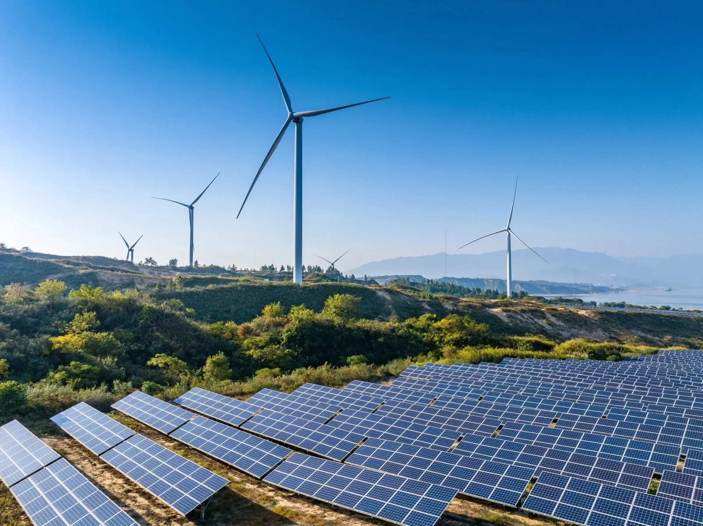
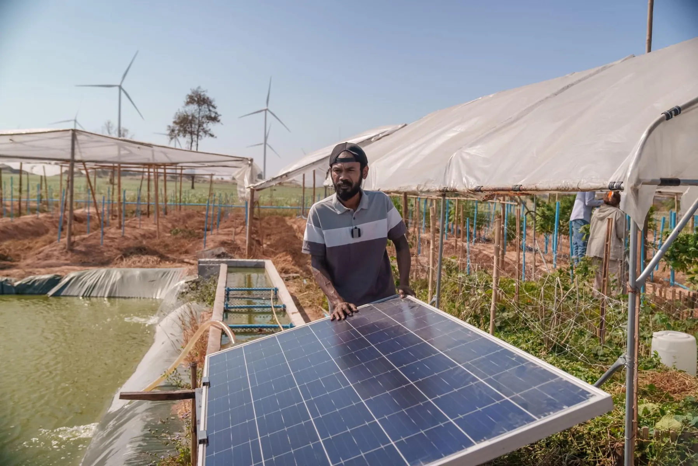
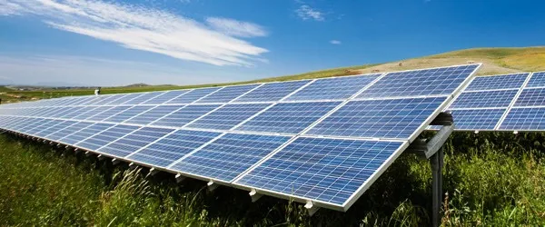
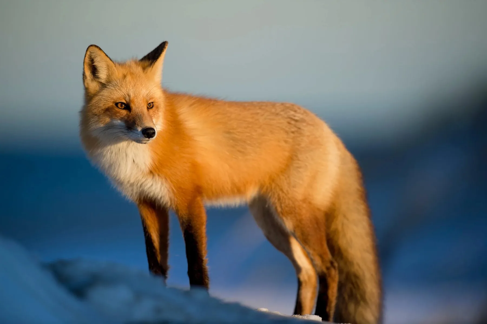
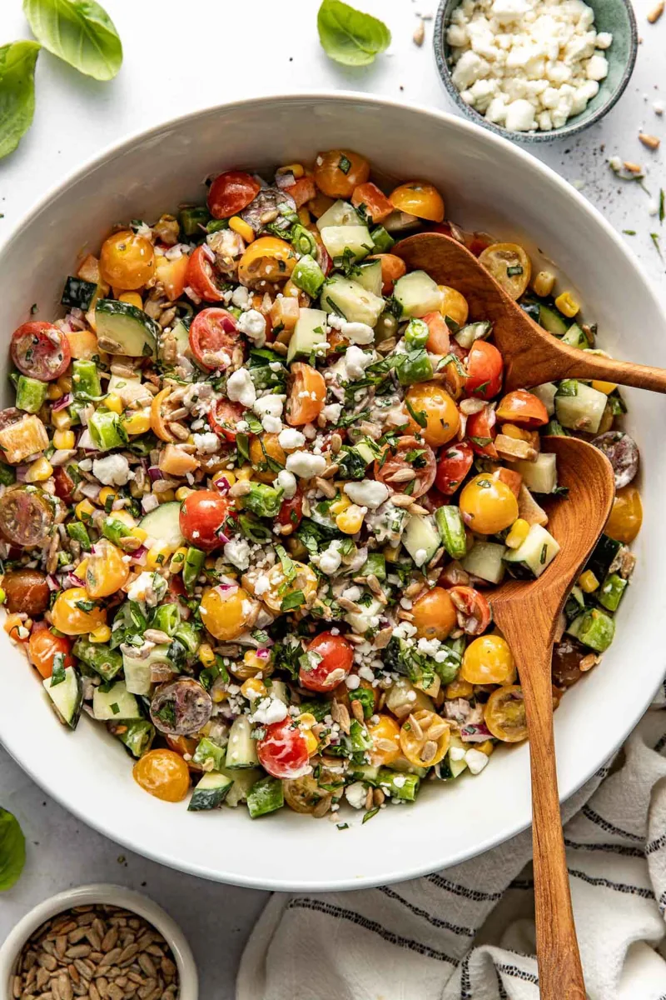
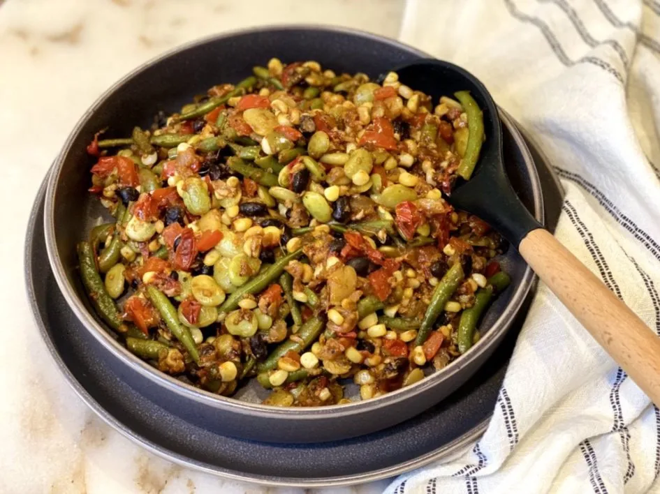
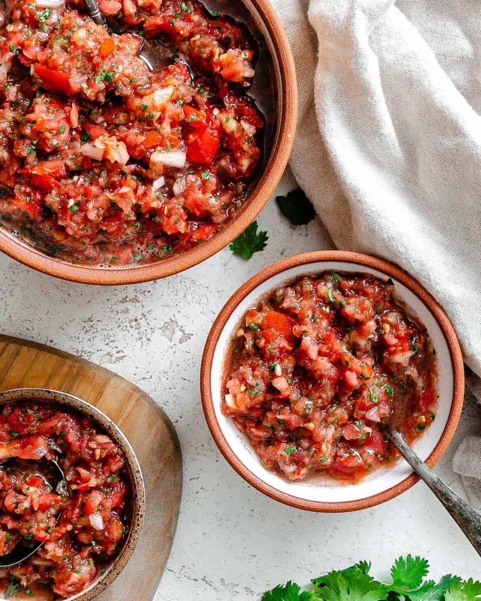
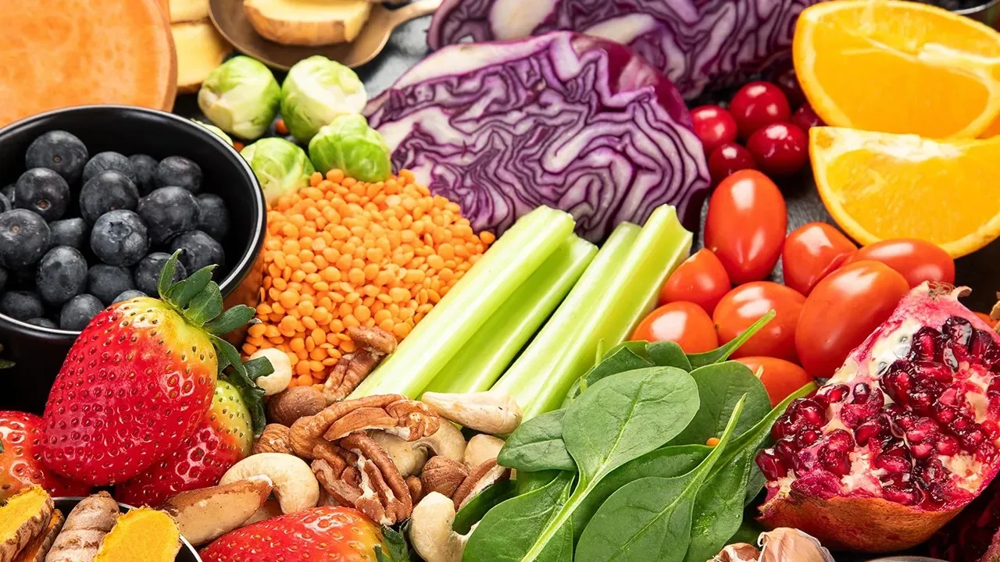

Natural Energy

Energy ideas that look beyond conventional power.
Learn moreWelcome to Foxtail Farms
Explore a farm concept where food, growing technology, and everyday inspiration come together.
Explore our storyGrowing forward
Three ways this concept explores a more thoughtful approach to farming.

Energy ideas that look beyond conventional power.
Learn more
Tools that support the people and places behind the harvest.
Learn more
A closer look at the role of renewable power on farms.
Learn moreOur story
Foxtail Farms is a portfolio concept about connecting fresh food with the future of growing. The fox brings curiosity and character to a simple idea: better stories start close to the source.
See the vision
From farm to table
Three delicious starting points inspired by the ingredients in the design.

Grains, greens, and a bright mix of seasonal vegetables.

A comforting pan of vegetables, herbs, and grains.

A rich tomato dish made for sharing.

Fresh inspiration
Good food begins with ingredients that invite you to make something. Browse the visual market collection for ideas to bring to your own table.
Explore the market